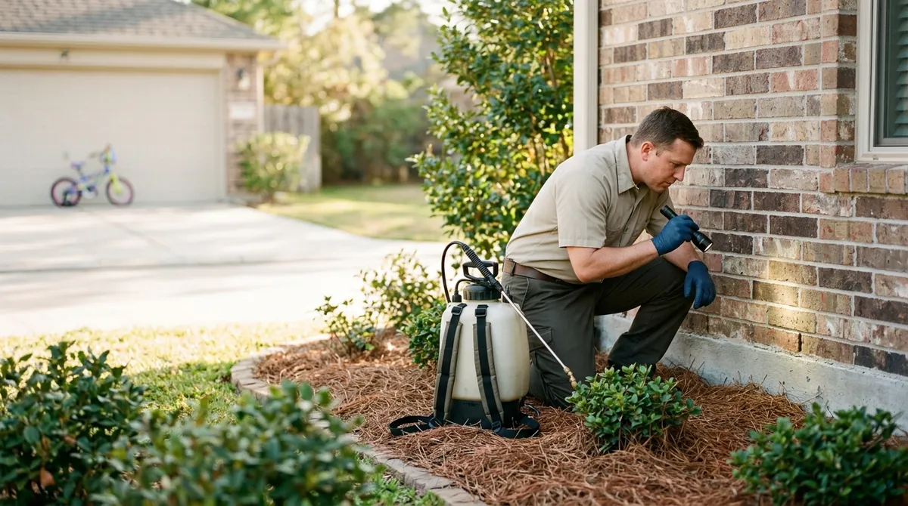

Houston pest control that stays gone.
Ants, roaches, mosquitoes and termites handled by a licensed tech who shows you exactly what he treated.
What are you seeing? Tap one. We’ll set up the right visit.
What we do
- General pest controlAnts, roaches, spiders and crickets stopped at the outside walls, with the inside treated when you ask.Learn more about general pest control →
- Termite inspection and treatmentWe find mud tubes and damage, then treat the soil around the house with a written plan and a one-year warranty.Learn more about termite inspection and treatment →
- Mosquito controlA barrier spray every month from April to October so you can use the backyard again.Learn more about mosquito control →
- Rodent controlWe find how they get in, seal the gaps and set stations. You get photos of every spot.Learn more about rodent control →
- Fire antsGranules in the beds and on every mound, so the yard is safe for kids and dogs again.Learn more about fire ants →
- Wasps and beesNests knocked down and treated, including the ones up high under the eaves.Learn more about wasps and bees →
The Free Home Pest and Termite Inspection
A licensed tech walks the outside of your home, checks the attic and garage, and gives you a written plan the same day.
- Outside walk-aroundFoundation, weep holes, eaves and fence line checked for activity.$100 value
- Termite checkMud tubes, wood damage and swarmer wings, with photos.$125 value
- Written plan and priceWhat we found, what it takes to fix it, and what it costs. No pressure.Included
- Pet and kid safety talkWe explain when it is dry and safe to go back outside.Included
How it works
- 1Book onlinePick a day and time. It lands on our calendar right away.
- 2We text before we arriveYou see who is coming and when.
- 3Get your reportPhotos, what we treated and your next visit, all in one place.
- Licensed with the Texas Department of Agriculture Structural Pest Control Service (demo license)
- Every tech trained, registered and supervised by a certified applicator
- Use record and Consumer Information Sheet at every treatment
Home Shield
Home Shield (quarterly)
$45/mo
- Quarterly exterior service, interior on request
- Free re-services between visits
- Service report with photos every visit
Home Shield Plus (bi-monthly)
$55/mo
- Service every 2 months
- Fire ant granules included
- Free re-services
Questions
How much does termite treatment cost in Houston?
Most homes run about $1,000 to $2,500 for a liquid barrier and about $1,500 to $3,500 for a bait system, depending on the size of the house. You get the exact price in writing after the free inspection.
Is the spray safe for my kids and dogs?
Yes, when you follow the dry time. Keep pets and kids off treated areas until the spray is dry, usually 2 to 3 hours. We leave a Consumer Information Sheet at every home.
How often do I need pest control in Houston?
Most homes do best with service every 2 or 3 months because warm, wet weather keeps bugs active almost all year. Mosquito spray is monthly from April to October.
Who licenses pest control companies in Texas?
The Texas Department of Agriculture Structural Pest Control Service licenses the company and every technician. Ask any company for its license number before you hire it.
Do I need a termite inspection every year?
Yes, once a year is smart in Houston. Subterranean and Formosan termites are common here, and a yearly inspection catches them before the damage gets big.
Book a free inspection.
No cost, no obligation. Seeing termites or a wasp nest right now? Call us and we will fit you in fast.